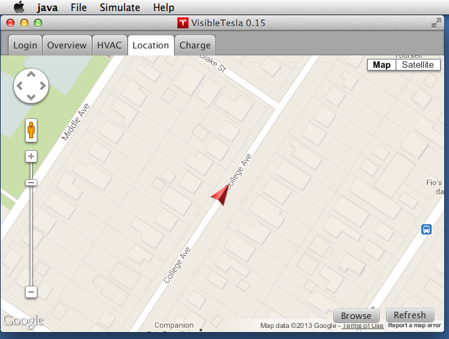
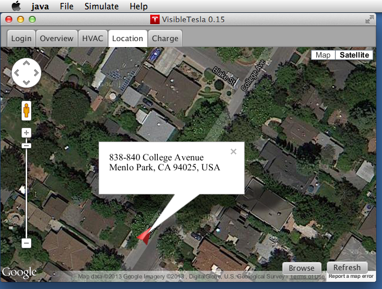

The Location Tab
The Location tab embeds a Google map which shows the current location of your car using a red vehicle marker. The marker is rotated to show your car's heading. There is a "Browse" button that will launch your default browser displaying a Google map with the car's location so you can get directions or perform any other Google map function.
Like a normal Google Map, you can zoom in and out, you can pan, and switch to satellite mode. If you click on the arrow representing your Tesla, an info window will pop up displaying the street address that is closest to your car's location.
If the car is moving, the map will automatically pan so that the car stays at the center. This is the same behavior as the GPS display in your car. If you manually pan the map (click and drag), you are indicating that you want to view a specific location and the map will no longer pan as the car moves. Instead you'll see the car move towards an edge of the map. The app will not allow the car to exit the display. Instead it will reposition the map slightly to keep the car just at the edge so at least part of it is visible. If you want the car to be automatically centered again, just click on the marker icon. That will recenter the map and show the address nearest the car in a popup info window.
Note: The contents of the info window will become stale as the car moves. To refresh it, simply close it and open it again.
